TRPGスライドシステムの使い方
Table of Contents
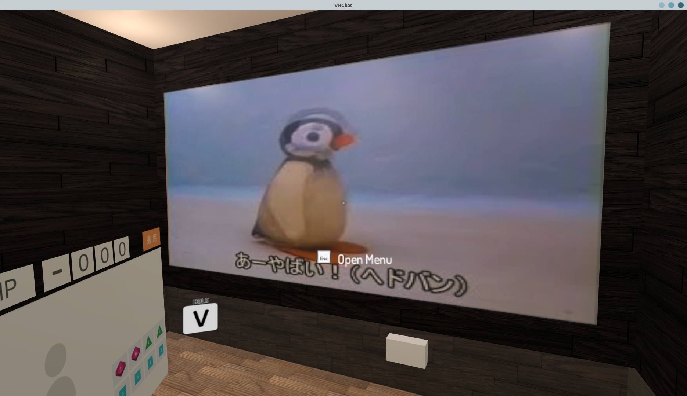
GM担当者がVRChat内のスライドを操作する方法についてメモします。
1 事前準備
まずは事前準備について説明します。
このセクションの作業はTRPGセッション開催日よりも前にあらかじめ終わらせておきます。
1.1 使用する画像のアップロード
まずはGoogle Driveの画像置き場にアクセスしましょう。
ここに、当日のセッションで使用する画像をアップロードしておきます。
前回セッションの画像や不要なファイルが存在する場合は削除するか適当なフォルダに移動させましょう。
以下は空っぽの状態です。（フォルダはシステムから見えないので存在していてOK）
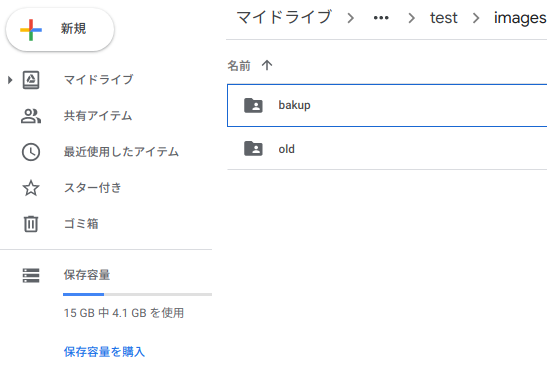
ここにドラッグアンドドロップで画像を放り込みます。
以下はネットで拾ってきたピングーの画像をアップロードした例です。
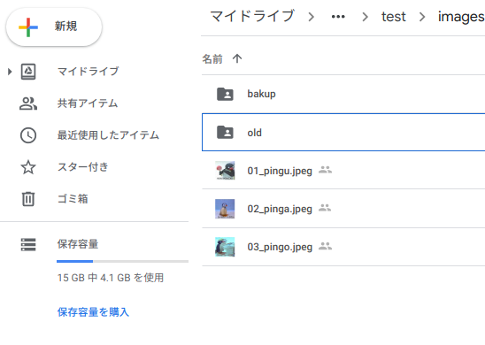
1.2 画像IDの取得
次に、アップロードした画像のIDをコピーします。
IDはGoogle Drive内で使用される管理用のラベルであり、ファイル名とは違って通常の方法ではユーザーから見えません。
IDを取得するためには、取得したいファイルを選択（一括選択可）し、右クリックメニューから「共有」を選択します。
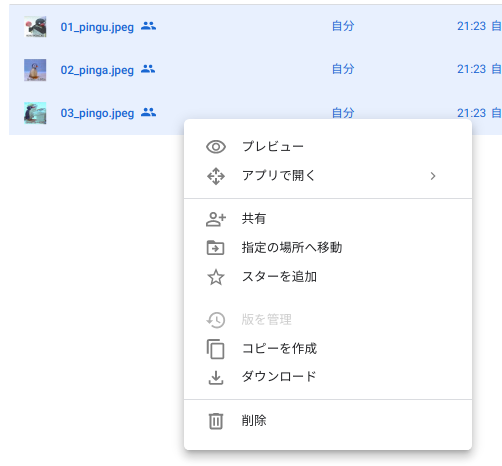
すると以下のようなダイアログが現れ、IDを含んだリンクがテキストボックス中に表示されます。
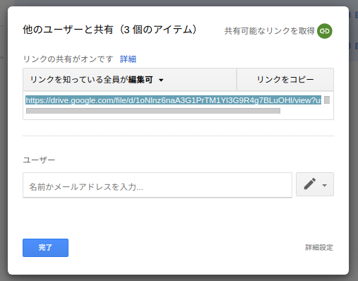
「リンクをコピー」を押してこの文字列をコピーしておいてください。
1.3 画像リストの編集
VRChat用スライドシステムは画像IDの記載されている 画像リスト を読み込んで動作しています。先ほどコピーした画像IDをこのリストに貼り付けていきましょう。
画像リストはこのディレクトリに「imageList」という名前のスプレッドシートとして存在します。
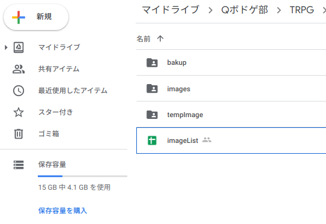
ファイルを開くと以下のような画面が表示されます。
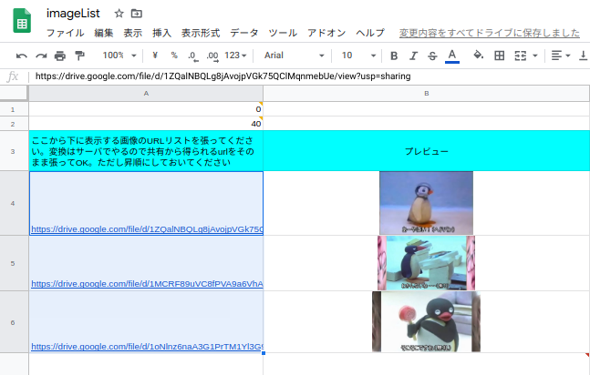
「A4」セルを選択し貼り付け（Ctrl or Cmd + V）を行うと、先ほどコピーした画像ID（正確には画像IDを含んだURL）がAカラムにずらっと貼り付けられます。既にデータが存在する場合は「A」カラムに入っている「A4」以降のURLを削除しておきます。
貼り付けが正常におこなわれていると「B」カラムに画像のプレビューが表示されます。
正常に貼り付けが完了したら、貼り付けた画像の枚数を「A2」セルに記入します。
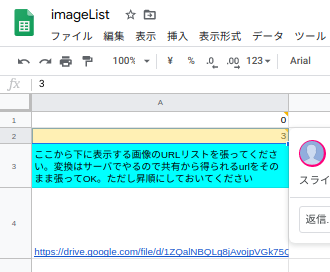
以上で事前準備は完了です。
なお、現段階で既にVRChatプレイルーム内のスライドにはimageList先頭の画像が表示されるようになっています。
2 セッション中の操作
先ほどまでとは打って変わって、セッション本番ではGoogle Driveには一切触りません。
その代わりに 操作用のWebアプリケーション にアクセスし、そこから切り替え操作を行う必要があります。
なお、以降の操作は
- 表示する画像の選択（Webアプリケーション）
- スクリーンへの反映（VRChat内での操作）
の2ステップに分かれており、WebアプリとVRChatの画面を行き来することになるため、アプリ側はスマートフォンなどのモバイル端末から別途アクセスすることをおすすめします。
2.1 表示する画像の選択（Webアプリケーション）
ブラウザからWebアプリケーションにアクセスします。
この画面には先ほどアップロードした画像がカード上に表示されており、クリックまたはタップすることで、次にスクリーンに表示する画像として登録することができます。
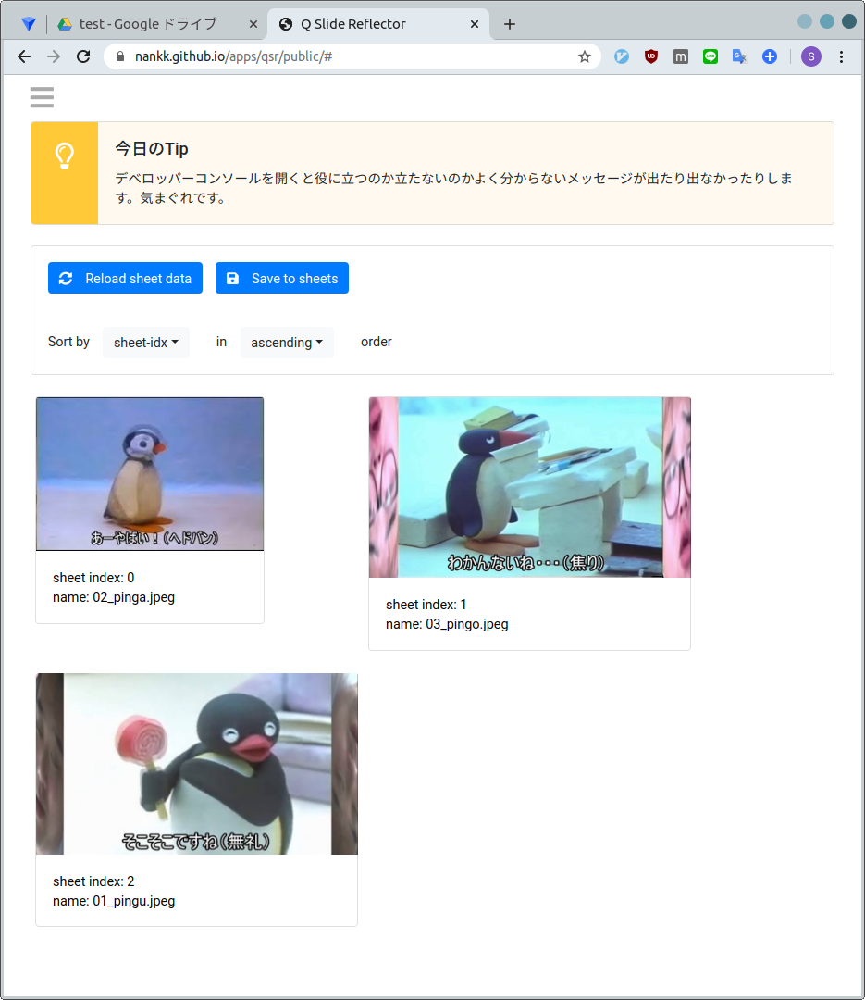
以下の例では画像リストの2番目に存在する「03_pingo.jpeg」をクリックしています。
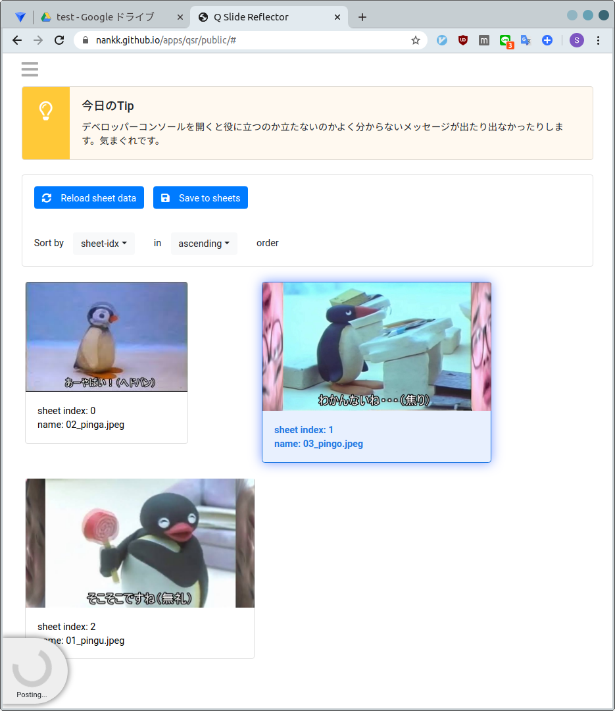
画像をクリックすると画面の左下に「Posting…」と表示されます。
これが「Done！」に変わると反映完了です。
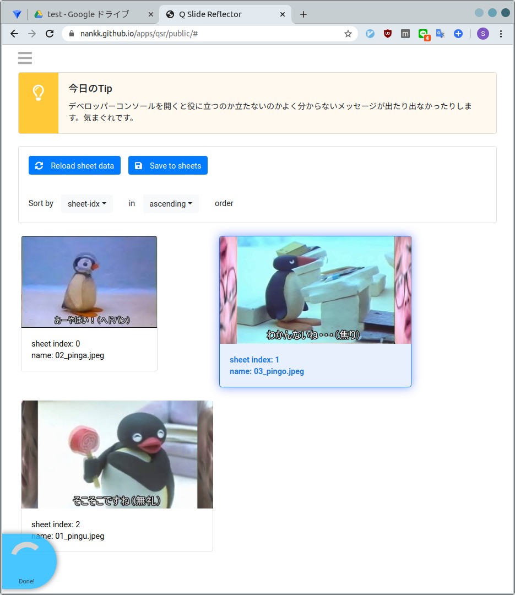
なお、画像リストに貼り付けたIDは必ずしもDrive内の順番と一致しないので、順番が分かりづらい場合はドラッグ（モバイル端末からは短くホールドしてからスワイプ）することで並べ替えを行うことができます。
2.2 スクリーンへの反映（VRChat内での操作）
先ほど選択した画像をVRChat内のスクリーンに表示させるためには、スクリーンのすぐ下に付いている豆腐っぽいボタンをクリックします。
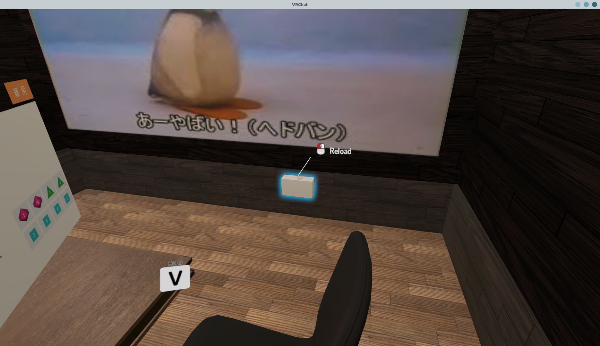
この状態で少し（2-3秒程度。長いと10秒程度）待つと、スクリーンに表示される画像が先ほど選択したものに変わります。
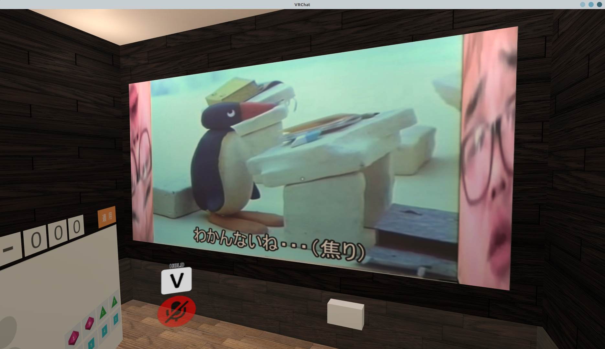
再び別の画像に変更する場合はWebアプリに戻り、同様の手順を繰り返してください。